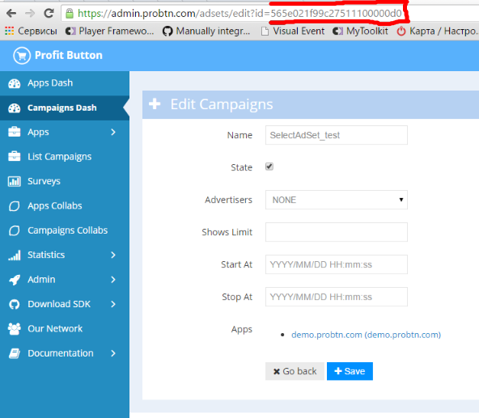

AdFox integration¶
AdFox integration with modified code¶
To add the button using an adFox network, follow these steps:

Step1¶
Create a page on the same domain where the button is to be displayed.
On this page, add the following script showinparent_concat.js
<script src="//cdn.viewst.com/showinparent_concat.js"></script>
For example:
<!DOCTYPE html>
<html>
<head lang="en">
<meta charset="utf-8">
<meta name="viewport" content="width=device-width, initial-scale=1">
<title>probtn (hackpad)</title>
</head>
<body>
<script src="//cdn.viewst.com/showinparent_concat.js"></script>
</body>
</html>
Step2¶
Create a banner (RichMedia format)
Step3¶
Create an ad with the following content:
<iframe src="//example.com/example_iframe_page.html?domain=nessasary_example_app_domain.test" style="border: 0px; width: 0px; height: 0px; display: none;"></iframe>
Url //example.com/showinparent.html?domain=nessasary_example_app_domain.test is an example, use your own path (to the page created on step 1)
Change the value of the GET param of the domain (cited as an example) from nessasary_example_app_domain.test to the necessary domain (identifier) used in the appropriate app at admin.viewst.com
Set campaign (optional)¶
It’s possible to use campaign id, so probtn would show creatives only from selected campaign fro app. To do so, you should:
Create ad with code
<iframe style="border: 0px; width: 0px; height: 0px; display: none;" src="//example.com/example_iframe_page.html?domain=nessasary_example_app_domain.test&SelectAdSet=565e021f99c27511100000d0"></iframe>
Url //example.com/example_iframe_page.html добавлен для примера, is an example, use your own path (to the page created on step 1)
Also value of GET param domain (for example) nessasary_example_app_domain.test should be replaced on nessesary (id), used in nessesary app in admin.viewst.com
Value of GET param SelectAdSet (for example) 565e021f99c27511100000d0 should be replaced on nessesary campaign id (don’t use placement or creative id).
Campaign ID could be found at url, if you open campaign page at admin.viewst.com.
